Paradigma de Programación Orientada a Objectos
Historia
La programación orientada a objetos (POO) nace en los años 60's en el Norwegian Computing Center en la implementación de dos lenguajes de programacion de simulacion: Simula 1 y Simula 67 desarrollados por Kristen Nygaard y Ole Johan Dahl. Simula 67 introdujo por primera vez los conceptos de clases, objetos, herencia, subclases, corrutinas y funciones virtuales; es por ello que Simula es considerado el primer lenguaje orientado a objetos.

Programa "Hola Mundo" en Simula 67:
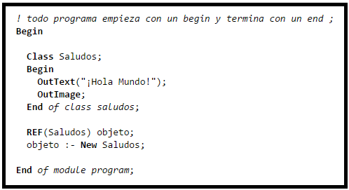
El mensaje está codificado en el bloque de código de la clase Saludos. Este bloque de código se ejecuta solamente cuando existe una instancia o variable de tipo Saludos; lo que ocurre efectivamente al crear una instancia por medio de la instrucción New.En Simula, los objetos siempre son manejados por medio de referencias. Existe un recolector de basura que se encarga de eliminar de la memoria los objetos que se han quedado sin referencias a ellos. Una de estas referencias la vemos con variable objeto. Utilizamos el operador :- para asignar referencias.A diferencia de muchos lenguajes modernos, Simula entiende de dos tipos de objetos:
Activos: Son aquellos objetos que aún no han completado su bloque asociado begin/end.
Inactivos: Son aquellos que han completado su bloque de instrucciones.
Tanto de unos como de otros, es posible ejecutar los procedimientos miembro y consultar los atributos en cualquier momento.
Activos: Son aquellos objetos que aún no han completado su bloque asociado begin/end.
Inactivos: Son aquellos que han completado su bloque de instrucciones.
Tanto de unos como de otros, es posible ejecutar los procedimientos miembro y consultar los atributos en cualquier momento.
Evolución

Años después del desarrollo de Simula casi todos los lenguajes modernos comenzaron a utilizar sus principios de orientación a objetos. Así fue como se popularizaron términos como clases, objetos, instancias, herencia, polimorfismo, etc.
Filosofía
POO es la implementación del pensamiento orientado a objetos en la programación.
POO nos dice:
- Pensar todo en términos de objetos.
- Representar los objetos de la forma más cercana a cómo expresamos las cosas en la vida real.
- Dar prioridad a los objetos y no a la funcionalidad.
- Pensar en el propósito general del programa como un todo antes de subdividir este.
- Los programas se definen en términos de objetos, propiedades, métodos, y la interacción (comunicación) entre objetos.
POO nos dice:
- Pensar todo en términos de objetos.
- Representar los objetos de la forma más cercana a cómo expresamos las cosas en la vida real.
- Dar prioridad a los objetos y no a la funcionalidad.
- Pensar en el propósito general del programa como un todo antes de subdividir este.
- Los programas se definen en términos de objetos, propiedades, métodos, y la interacción (comunicación) entre objetos.
Ejemplo de pensamiento orientado a objetos :
El mundo visto por un programador orientado a objetos :

Principios
SOLID: Es un acrónimo mnemónico introducido por Robert C. Martín a comienzos de la década del 2000 que representa cinco principios básicos de la programación orientada a objetos y el diseño.Cuando estos principios se aplican en conjunto es más probable que un desarrollador cree un sistema que sea fácil de mantener y ampliar con el tiempo.Los principios SOLID son guías que pueden ser aplicadas en el desarrollo de software para eliminar código sucio provocando que el programador tenga que refactorizar el código fuente hasta que sea legible y extensible.
- Principio de una sola responsabilidad
- Principio abierto/cerrado
- Principio de sustitución Liskov
- Principio de segregación de interfaz
- Principio de Inversión de dependencia
Principio de una sola responsabilidad
Cada clase debe tener una única responsabilidad, y esta debe estar contenida únicamente en la clase. Así:
- Una clase debería tener sólo una razón para cambiar.
- Cada responsabilidad es el eje del cambio.
- Para contener la propagación del cambio, debemos separar las responsabilidades.
- Si una clase asume más de una responsabilidad, será más sensible al cambio.
- Si una clase asume más de una responsabilidad, las responsabilidades se acoplan.
Ejemplo:
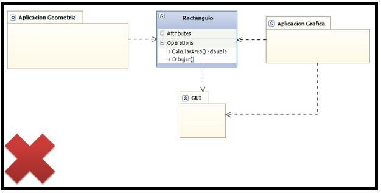
Tenemos la clase Rectangulo que tiene las siguientes responsabilidades: calcular el area y dibujar; como podemos observar son responsabilidades totalmente diferentes, es decir la clase Rectangulo no tiene una responsabilidad concreta y especifica.
La solucion a este mal diseño es aplicar el principio de unica responsabilidad, para ello lo que hacemos es
delegar la responsabilidad de dibujar, a otra clase llamada RectanguloGrafico, de esta forma ya tenemos clases con una responsabilidad bien definida:
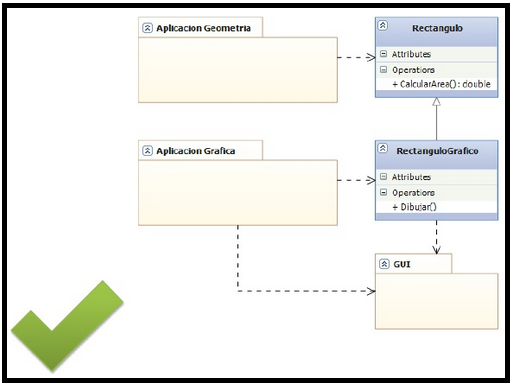
Principio abierto/cerrado
Este principio establece que una entidad de software (clase, módulo, función, etc.) debe quedarse abierta para su extensión, pero cerrada para su modificación. Es decir, se debe poder extender el comportamiento de tal entidad pero sin modificar su código fuente.
Una clase está cerrada, dado que puede ser compilada, almacenada en una librería y usada por otras clases. Pero también está abierta, dado que a partir de ella podríamos crear nuevas subclases que incorporaran características nuevas. Y al crear una subclase, no hay ninguna necesidad de modificar la superclase.
- Se dice que un módulo está abierto si se puede extender.
- Se dice que un módulo queda cerrado si queda utilizable para otros módulos.
- Si un cambio impacta a varios modulos, entonces la aplicacion no esta bien diseñada.
- Debemos diseñar modulos que nunca cambien, de esa forma los podriamos reutilizar mas adelante.
Ejemplo:
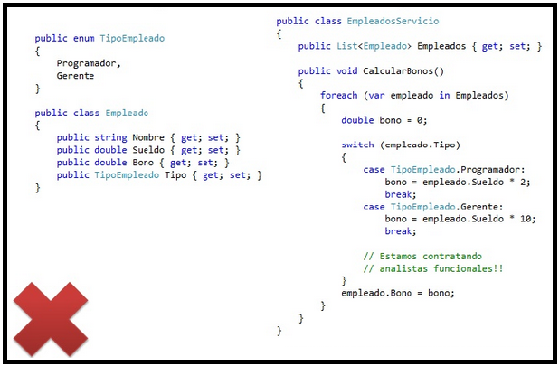
Tenemos que calcular el bono que recibiran los programadores y los gerentes, como vemos en la imagen eso se hace mediante una sentencia switch, lo cual es ineficiente ya que si hubieran mas tipos de empleados por ejemplo 100, este bloque switch se llenaria de 100 casos lo cual dificultaria el mantenimiento del codigo.
La solucion a este mal diseño es aplicar el principio de abierto/cerrado, para ello lo que hacemos es extender el comportamiento de la clase Empleado, y crear el metodo Calcular bono en la clase Empleado para que todos los subtipos de Empleado puedan redefinir este metodo:

Una clase está cerrada, dado que puede ser compilada, almacenada en una librería y usada por otras clases. Pero también está abierta, dado que a partir de ella podríamos crear nuevas subclases que incorporaran características nuevas. Y al crear una subclase, no hay ninguna necesidad de modificar la superclase.
La solucion a este mal diseño es aplicar el principio de abierto/cerrado, para ello lo que hacemos es extender el comportamiento de la clase Empleado, y crear el metodo Calcular bono en la clase Empleado para que todos los subtipos de Empleado puedan redefinir este metodo:
Principio de sustitución Liskov
Los objetos de un programa deberían ser reemplazables por instancias de sus subtipos sin alterar el correcto funcionamiento del programa.
- Cada clase que hereda de otra puede usarse como su padre sin necesidad de conocer las diferencias entre ellas.
- Funciones que usen punteros o referencias a clases base deben poder usar objetos de clases derivadas sin saberlo
Ejemplo:
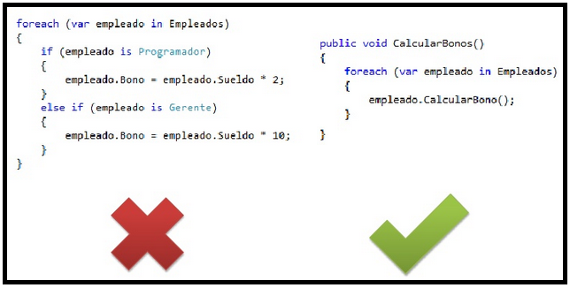
Podemos ver que al lado izquierdo de la imagen que se quiere calcular el bono para programador y gerente, pero en dado caso que hayan 100 tipos de empleados este metodo se llenaria de 100 sentencias if lo cual es ineficiente pues esto dificultaria el mantenimiento del codigo.
La solucion a este mal diseño es aplicar el principio de sustitucion de Liskov, para ello lo que hacemos es recorrer la lista de todos los empleados y como tenemos que calcular el bono a todo tipo de empleado y los bonos pueden ser diferentes para cada tipo de empleado entonces dejamos que cada empleado implemente su comportamiento; en otras palabras hacemos que todos los tipos de empleados llamen al metodo calcular bono, pero cada uno implementara ese metodo de acuerdo al sueldo que reciba.En ultimas hemos aplicado el concepto de polimorfismo de subtipos.
La solucion a este mal diseño es aplicar el principio de sustitucion de Liskov, para ello lo que hacemos es recorrer la lista de todos los empleados y como tenemos que calcular el bono a todo tipo de empleado y los bonos pueden ser diferentes para cada tipo de empleado entonces dejamos que cada empleado implemente su comportamiento; en otras palabras hacemos que todos los tipos de empleados llamen al metodo calcular bono, pero cada uno implementara ese metodo de acuerdo al sueldo que reciba.En ultimas hemos aplicado el concepto de polimorfismo de subtipos.
Principio de segregación de interfaz
Este principio hace referencia a que muchas interfaces cliente específicas son mejores que una interfaz de propósito general.
- Este principio se aplica a una interfaz amplia y compleja para dividirla en otras más pequeñas y específicas, de tal forma que cada cliente use sólo aquella que necesite, pudiendo así ignorar al resto.A este tipo de interfaces reducidas se les llama "interfaces de rol".
- Los clientes de un programa dado sólo deberían conocer los métodos que realmente van usar, y no aquellos que no necesitan usar.
- Fue concebido para mantener a un sistema desacoplado respecto a los sistemas de los que depende, y así resulte más fácil refactorizarlo, modificarlo y redesplegarlo.
Ejemplo:
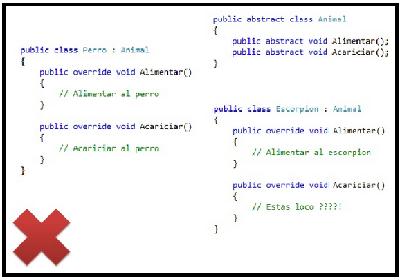
Podemos ver que la clase escorpion al ser un animal, se podria alimentar y acariciar, lo cual en este contexto seria fatal pues el escorpion es un animal peligroso que no se debe acariciar, tan solo se podria alimentar.
La solucion a este mal diseño es aplicar el principio de segregacion de la interfaz, éste nos permitira que la clase escorpion no se vea obligada a tener que implementar todos los comportamientos de un animal, sino que implemente un comportamiento especifico.Para ello lo que hacemos es dividir los metodos de la clase animal para que de esta forma el animal solo se pueda alimentar y en ultimas que la clase escorpion pueda implementar este comportamiento especifico.
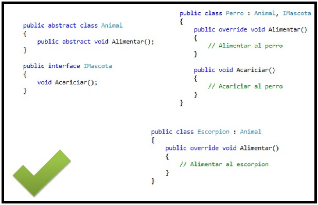
- Este principio se aplica a una interfaz amplia y compleja para dividirla en otras más pequeñas y específicas, de tal forma que cada cliente use sólo aquella que necesite, pudiendo así ignorar al resto.A este tipo de interfaces reducidas se les llama "interfaces de rol".
- Los clientes de un programa dado sólo deberían conocer los métodos que realmente van usar, y no aquellos que no necesitan usar.
- Fue concebido para mantener a un sistema desacoplado respecto a los sistemas de los que depende, y así resulte más fácil refactorizarlo, modificarlo y redesplegarlo.
La solucion a este mal diseño es aplicar el principio de segregacion de la interfaz, éste nos permitira que la clase escorpion no se vea obligada a tener que implementar todos los comportamientos de un animal, sino que implemente un comportamiento especifico.Para ello lo que hacemos es dividir los metodos de la clase animal para que de esta forma el animal solo se pueda alimentar y en ultimas que la clase escorpion pueda implementar este comportamiento especifico.
Principio de Inversión de dependencia
Este principio establece:
- Los módulos de alto nivel no deben depender de los módulos de bajo nivel. Ambos deben depender de abstracciones.
- Las abstracciones no deben depender de los detalles. Los detalles deben depender de abstracciones.
Puede implementarse con: inyeccion de dependencias o inversion del control.
Ejemplo:
Imaginemos que tenemos una cesta de compra que lo que hace es almacenar la información y llamar al método de pago para que ejecute la operación. Nuestro código sería algo así:
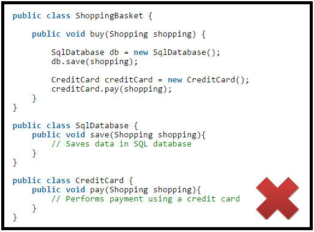
Aquí estamos incumpliendo el principio. Una clase de más alto nivel, como es ShoppingBasket (cesta de compra), está dependiendo de otras de alto nivel las cuales son: SqlDatabase (Base de datos) y CreditCard (tarjeta de credito), y luego se encarga de crear objetos de estas clases y después utilizarlos.
Piensa ahora qué pasa si quieres añadir métodos de pago, o enviar la información a un servidor en vez de guardarla en una base de datos local. No hay forma de hacer todo esto sin desmontar toda la lógica. ¿Cómo lo solucionamos?
Primer paso, dejar de depender de clases. Vamos a crear interfaces que definan el comportamiento que debe dar una clase para poder funcionar como mecanismo de persistencia o como método de pago:
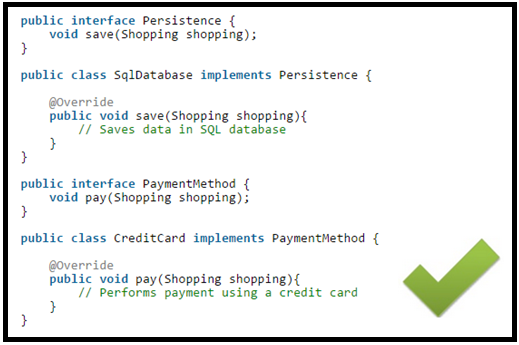
¿Ves la diferencia? Ahora ya no dependemos de la implementación particular que decidamos. Pero aún tenemos que seguir instanciándolo en ShoppingBasket.
Nuestro segundo paso es invertir las dependencias. Vamos a hacer que estos objetos se pasen por constructor:
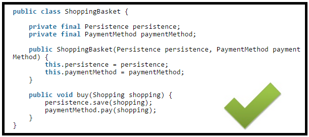
De esta forma ya tendriamos implementado el principio de inversion de dependencias.
Piensa ahora qué pasa si quieres añadir métodos de pago, o enviar la información a un servidor en vez de guardarla en una base de datos local. No hay forma de hacer todo esto sin desmontar toda la lógica. ¿Cómo lo solucionamos?
Primer paso, dejar de depender de clases. Vamos a crear interfaces que definan el comportamiento que debe dar una clase para poder funcionar como mecanismo de persistencia o como método de pago:
Ventajas
 Reutilización de código: Cuando hemos diseñado adecuadamente las clases, se pueden usar en distintas partes del programa y en numerosos proyectos.Lo cual pemite:
Reutilización de código: Cuando hemos diseñado adecuadamente las clases, se pueden usar en distintas partes del programa y en numerosos proyectos.Lo cual pemite:
- Rápido desarrollo.
- Alta calidad del código.
- Bajo costo en fases de desarrollo.
- Modificabilidad: La facilidad de añadir o suprimir nuevos objetos nos permite hacer modificaciones de una forma muy sencilla.
- Encapsulamiento: Nos permite proteger la integridad de los datos.
- Fiabilidad: Al dividir el problema en partes más pequeñas podemos probarlas de manera independiente y aislar mucho más fácilmente los posibles errores que puedan surgir.
- Beneficios de diseño
- Mantenimiento de Software
- Documentación
- Reutilización de código: Cuando hemos diseñado adecuadamente las clases, se pueden usar en distintas partes del programa y en numerosos proyectos.Lo cual pemite:
- Rápido desarrollo.
- Alta calidad del código.
- Bajo costo en fases de desarrollo.
- Modificabilidad: La facilidad de añadir o suprimir nuevos objetos nos permite hacer modificaciones de una forma muy sencilla.
- Encapsulamiento: Nos permite proteger la integridad de los datos.
- Fiabilidad: Al dividir el problema en partes más pequeñas podemos probarlas de manera independiente y aislar mucho más fácilmente los posibles errores que puedan surgir.
- Beneficios de diseño
- Mantenimiento de Software
- Documentación
Desventajas
 Curva de aprendizaje: La necesidad de utilizar bibliotecas de clases obliga a su aprendizaje y entrenamiento.
Curva de aprendizaje: La necesidad de utilizar bibliotecas de clases obliga a su aprendizaje y entrenamiento.- La ejecución de programas orientados a objetos es más lenta.
- Tiempo en fase de diseño.
- Tamaño del programa.
Lenguajes de programación
- C++
- Objective-C
- Java
- Smalltalk
- Ruby
- Python
- ActionScript
- C#
- PHP
- Delphi
Aplicaciones
- Bases de datos orientadas a objetos:
La información es representada en forma de objetos.
Una base de datos orientada a objetos es una base de datos que incorpora todos los conceptos importantes del paradigma de objetos: encapsulamiento, herencia y polimorfismo.
En bases de datos orientadas a objetos, los usuarios pueden definir operaciones sobre los datos como parte de la definición de la base de datos. Una operación (llamada función) se especifica en dos partes. La interfaz (o signatura) de una operación incluye el nombre de la operación y los tipos de datos de sus argumentos (o parámetros). La implementación (o método) de la operación se especifica separadamente y puede modificarse sin afectar la interfaz. Los programas de aplicación de los usuarios pueden operar sobre los datos invocando a dichas operaciones a través de sus nombres y argumentos, sea cual sea la forma en la que se han implementado. Esto podría denominarse independencia entre programas y operaciones.
Ejemplo: Modelo orientado a objetos:
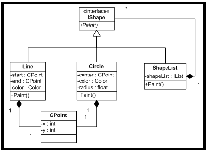
A partir de este modelo presentado se desarrollara una base de datos en DB4O.
DB4O es un novedoso motor de base de datos orientada a objetos. Sus siglas se corresponden con la expresión "DataBase 4 (for) Objects", que a su vez es el nombre de la compañía que lo desarrolla: db4objects Inc.
SQL:2003 es el estándar de SQL92 ampliado, el cual soporta los conceptos orientados a objetos y mantiene la compatibilidad con SQL92.
Almacenar Objetos en la base de datos:
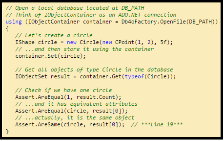
Actualizacion de objetos en la base de datos:
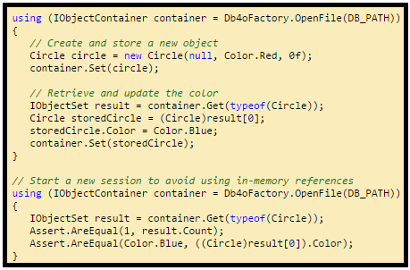
Eliminacion de objetos en la base de datos:
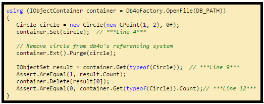
Consulta de objetos en la base de datos:
Para hacer consultas primero insertamos los siguientes objetos a la base de datos
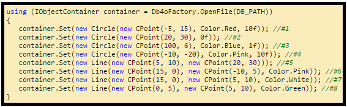
Hacemos las consultas sobre los objetos que acabamos de almacenar en la base de datos:

- Bases de datos orientadas a objetos:
La información es representada en forma de objetos.
Una base de datos orientada a objetos es una base de datos que incorpora todos los conceptos importantes del paradigma de objetos: encapsulamiento, herencia y polimorfismo.
En bases de datos orientadas a objetos, los usuarios pueden definir operaciones sobre los datos como parte de la definición de la base de datos. Una operación (llamada función) se especifica en dos partes. La interfaz (o signatura) de una operación incluye el nombre de la operación y los tipos de datos de sus argumentos (o parámetros). La implementación (o método) de la operación se especifica separadamente y puede modificarse sin afectar la interfaz. Los programas de aplicación de los usuarios pueden operar sobre los datos invocando a dichas operaciones a través de sus nombres y argumentos, sea cual sea la forma en la que se han implementado. Esto podría denominarse independencia entre programas y operaciones.
Ejemplo: Modelo orientado a objetos:
A partir de este modelo presentado se desarrollara una base de datos en DB4O.
DB4O es un novedoso motor de base de datos orientada a objetos. Sus siglas se corresponden con la expresión "DataBase 4 (for) Objects", que a su vez es el nombre de la compañía que lo desarrolla: db4objects Inc.
SQL:2003 es el estándar de SQL92 ampliado, el cual soporta los conceptos orientados a objetos y mantiene la compatibilidad con SQL92.
Almacenar Objetos en la base de datos:
Actualizacion de objetos en la base de datos:
Eliminacion de objetos en la base de datos:
Consulta de objetos en la base de datos:
Para hacer consultas primero insertamos los siguientes objetos a la base de datos
Hacemos las consultas sobre los objetos que acabamos de almacenar en la base de datos:
Los agentes son modelados como objetos.Es decir estos van a tener asociados unos atributos, un comportamiento, unas reglas para modificar su comportamiento y tambien van a poder interactuar con otros agentes como lo vemos en la siguiente imagen:
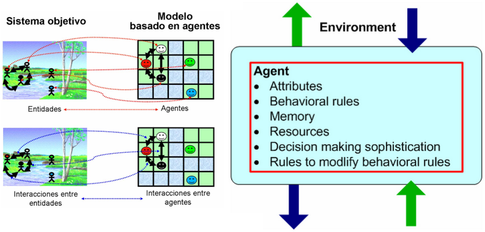
Diseño de interfaz de usuario:
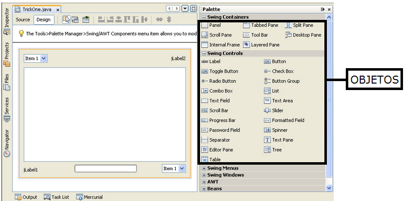
Cada elemento de la interfaz de usuario se puede considerar como un objeto, por ejemplo: boton, campo de texto, area de texto, etiqueta, se pueden ver como objetos.
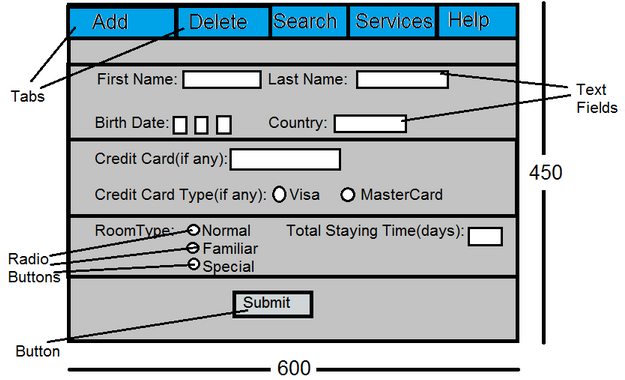
Ejemplo: Diseño de una interfaz grafica en java
Ejemplo: Diseño de una interfaz grafica en java